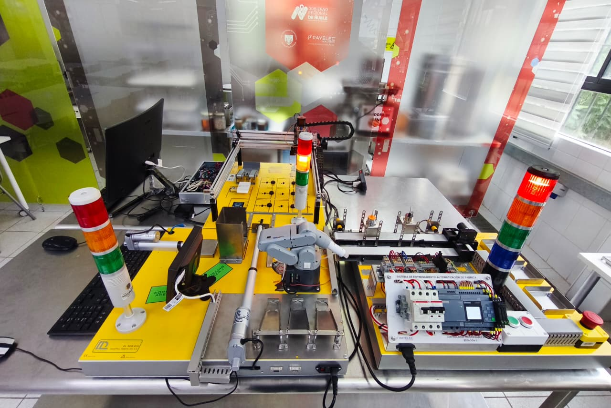
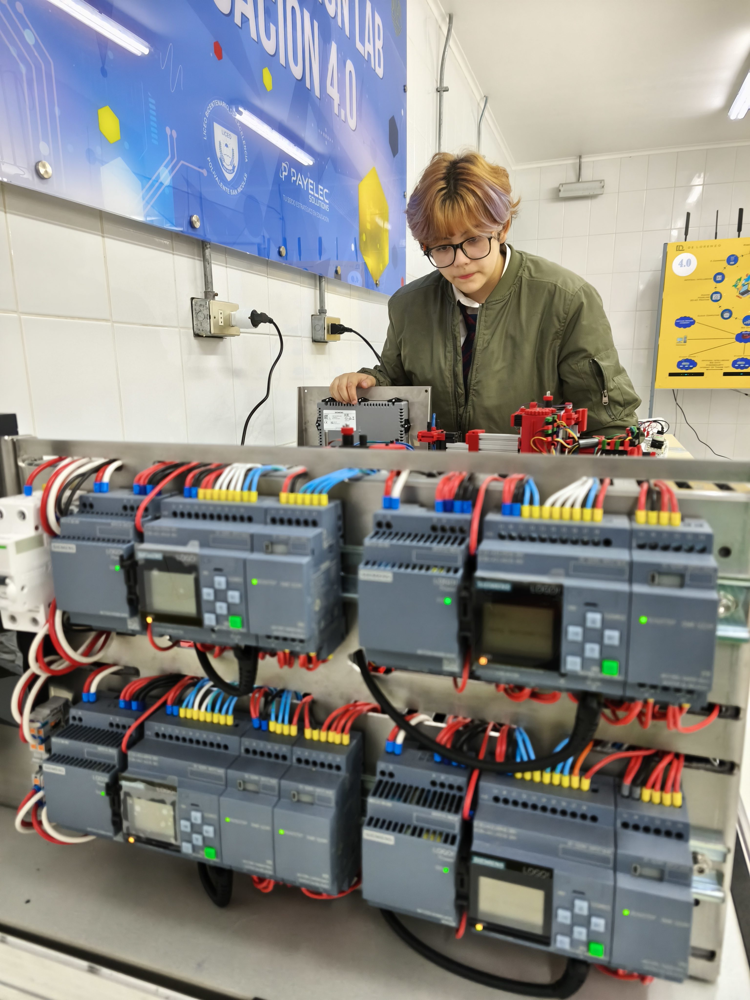
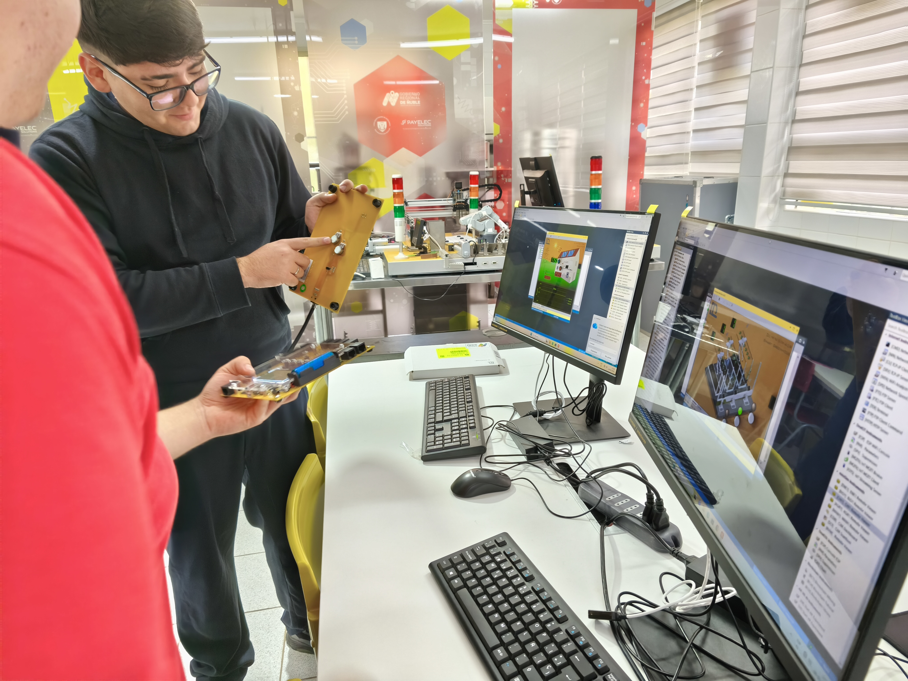
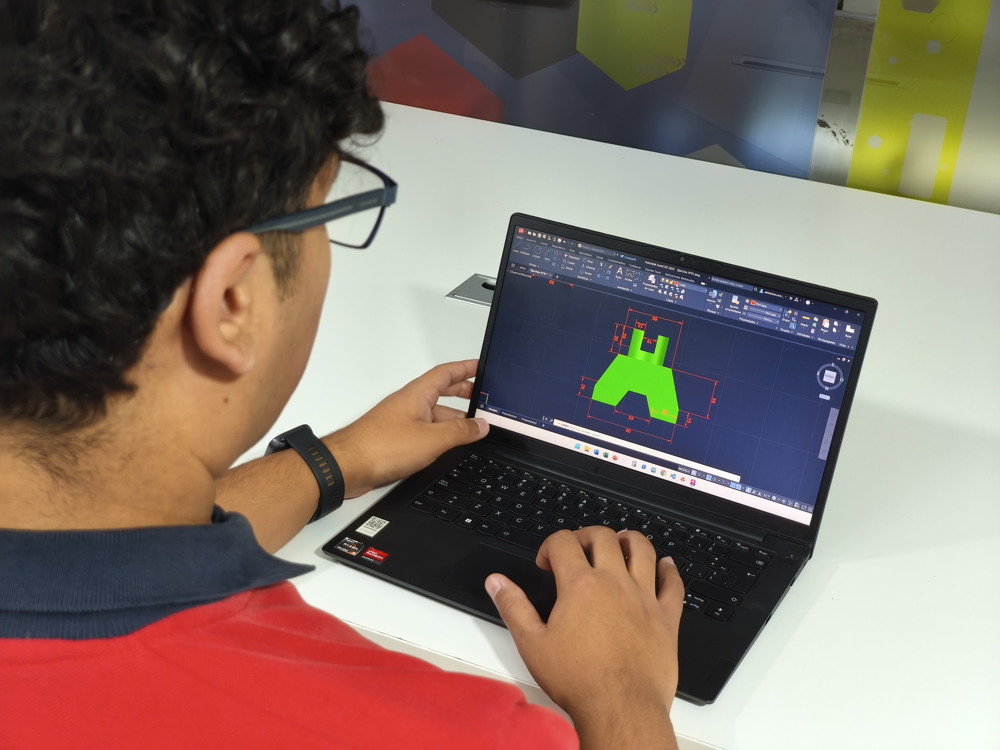
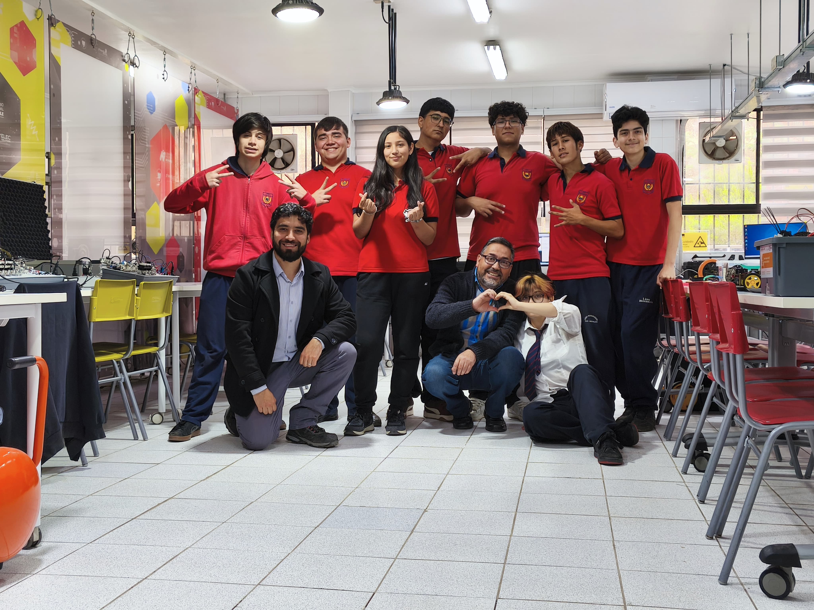

Conecta el territorio.
Automatiza la industria.
Una aproximación tecnológica de vanguardia dentro de la especialidad de Elaboración Industrial de Alimentos. Conoce un espacio de aprendizaje diseñado para explorar las competencias del mañana.
Una Mención en Constante Evolución
La transformación digital avanza rápido y nuestro entorno educativo cambia con ella. Esta mención ofrece a los estudiantes de segundo medio una plataforma de exploración tecnológica que vincula la ingeniería de procesos, la conectividad y la gestión del territorio. No se trata de memorizar rutinas automáticas, sino de entender cómo interactúa el hardware, el software y los datos en los ecosistemas productivos modernos.
🛠️ Aprender haciendo (Sujeto a Priorización)
Nuestra infraestructura está diseñada como un taller de ingeniería. Los contenidos y desafíos prácticos se adaptan anualmente según los focos priorizados del currículum escolar, dando flexibilidad y pertinencia real al aprendizaje.
🌐 Un Flujo de Trabajo Integrado
Desde comprender cómo se diseña un plano o se analiza un mapa, hasta explorar la lógica detrás del control de un motor o el aseguramiento de un canal de datos. Todo el espacio está conectado.
🧩 Descubre tu Perfil en Industria 4.0
Responde estas 3 breves preguntas para saber en qué área del laboratorio potenciarás mejor tus habilidades:
Tu Perfil Ideal: Specialist
Especialización Física y Automatización
Esta dimensión aborda los componentes esenciales que permiten controlar y dar movimiento a los procesos industriales modernos, equilibrando la lógica eléctrica tradicional con los nuevos controladores digitales.
Célula Integrada de Manufactura Automatizada (Payelec)
El laboratorio cuenta con un sistema modular avanzado co-desarrollado junto a la empresa de ingeniería Payelec y financiado con apoyo del Gobierno Regional de Ñuble. Esta maqueta emula una línea de producción real de extremo a extremo.
El sistema ofrece la posibilidad de explorar la automatización descentralizada y colaborativa mediante la integración de múltiples tecnologías en un solo flujo:
- Control Multitecnológico: Gestión integrada mediante PLC Industrial, Raspberry Pi y microcontroladores Arduino.
- Comunicación en Red: Las estaciones tienen la capacidad de comunicarse de manera independiente mediante protocolos TCP/IP, requiriendo coordinación lógica para el avance del proceso.
- Estación de Clasificación: Cuenta con una cinta transportadora automatizada equipada con sensores de proximidad y detector de metales para el control de calidad inicial.
- Paletizado con Cobot: Integra un brazo robótico colaborativo (Cobot) y actuadores lineales eléctricos encargados de estructurar y posicionar el pallet.
- Trazabilidad RFID: Cada pallet dispone de un Tag RFID leído por antenas en planta para asociar el lote a una orden de pedido específica.
- Bodega Inteligente y Descarte: Cuenta con un puente grúa automatizado con garra que recoge el pallet, lee su etiqueta, verifica su peso en una celda de carga para corroborar el pedido y decide de forma inteligente si lo almacena para despacho o lo deriva a la zona de descarte con su respectiva notificación en sistema.

Sistemas de Electrocontrol y Potencia
El laboratorio dispone de estaciones equipadas para el estudio y montaje de lógicas de control eléctrico bajo normativas vigentes. Los estudiantes tienen la oportunidad de interactuar directamente con elementos de protección y maniobra industrial como contactores, disyuntores, relés térmicos, diferenciales y botoneras de control, utilizando multímetros para el diagnóstico seguro de circuitos.


Mecatrónica y Fluidos Industriales (SMC)
Para comprender el control de movimiento y fuerza presente en las líneas de empaque o dosificación automáticas, el taller cuenta con entrenadores portátiles SMC PNEUMATE-200. Estas herramientas didácticas abren la posibilidad de diseñar y probar circuitos neumáticos reales basados en estándares de la industria global.
Controladores Programables Adicionales (PLCs)
Dependiendo de los objetivos pedagógicos planificados para el periodo académico, las estaciones secundarias de automatización permiten revisar desde fundamentos electrónicos con placas de desarrollo (Arduino / Raspberry Pi), hasta plataformas de control industrial como el ecosistema Siemens LOGO! y S7-1200, integrando además las nuevas alternativas de conectividad que ofrece el controlador Finder OPTA.

Infraestructura IT, Redes y Computación Perimetral
Un aspecto diferenciador de esta mención es la infraestructura tecnológica de red local que soporta el flujo de información, emulando la convergencia real entre las tecnologías de operación (OT) y de información (IT).
Arquitectura de Redes y Conectividad Propia
El laboratorio está dotado con una red de internet independiente estructurada mediante un switch Ethernet Gigabit y 3 routers separados. Esta configuración de hardware permite dictar clases orientadas a la segmentación de subredes, abriendo el espacio didáctico para que los estudiantes tengan la opción de experimentar cómo se aísla, gestiona y asegura el tráfico de datos críticos en una planta.
Servidores Locales Ubuntu
Para la administración de sistemas e infraestructura, el taller incorpora servidores de torre dedicados operando sobre plataformas Ubuntu Server de forma nativa. Esto permite simular el despliegue de soluciones e-commerce y aplicaciones locales que interactúan con la planta.

🤖 Entorno de Inteligencia Artificial Local
El laboratorio cuenta con una estación de cómputo de alto rendimiento equipada con procesador Intel i7, 32 GB de RAM y gráficos NVIDIA RTX 5070. Este hardware está preparado para explorar la integración de modelos de IA locales mediante Ollama, el diseño de dashboards con Antigravity IDE (Google) y la asistencia técnica de Gemini con fines de optimización de sistemas y visualización de datos en tiempo real.
🛡️ Pautas de Ciberseguridad (Pentesting)
La seguridad informática es crítica en la Industria 4.0. El plan formativo incluye pautas programadas de auditoría y hackeo ético (pentesting) diseñadas específicamente para entornos IIoT (Internet de las Cosas Industrial), ayudando a los estudiantes a comprender los vectores de vulnerabilidad en redes conectadas.
Laboratorio de Diseño, Prototipado y Geointeligencia
Cuando un componente de planta requiere una mejora o se necesita rastrear la cadena de suministro en el territorio, el laboratorio ofrece herramientas digitales y de manufactura aditiva avanzadas para prototipar soluciones.
Ingeniería de Diseño y Fabricación Digital
Los alumnos acceden a softwares estándar como AutoCAD, Tinkercad y Fusion 360 para el modelado en 2D y 3D. Dependiendo de las necesidades de los proyectos del año, estas ideas pueden materializarse físicamente en el taller utilizando la cortadora láser industrial Falcon 2 Pro (40W) o la impresión multicolor mediante la tecnología Bambulab A1 con sistema AMS.
Geointeligencia y Territorio (ESRI Chile)
A través de un convenio vigente con ESRI Chile, el laboratorio dispone de licencias profesionales avanzados de ArcGIS (Professional Plus y Creator) y herramientas como Drone2Map y Agisoft Metashape. Esto permite el estudio de sistemas de información geográfica, el procesamiento de fotogrametría y la estructuración de gemelos digitales para la trazabilidad y la logística agroalimentaria (Supply Chain).
*Nota institucional: El trabajo técnico directo con aeronaves pilotadas a distancia (drones) orientadas al área industrial se encuentra actualmente en fase de conversaciones para su reactivación.

Una Comunidad Tecnológica Basada en la Colaboración
Aprender tecnologías complejas no requiere un ambiente rígido o competitivo. Nuestro laboratorio promueve activamente un enfoque de trabajo horizontal, paritario y enfocado en la comunidad de aprendizaje.

Soporte entre Pares
Fomentamos que los estudiantes que logran dominar ciertos lenguajes de programación, lógicas cableadas o configuraciones de mapas, guíen y apoyen a sus propios compañeros. Creemos firmemente que el soporte técnico entre pares consolida el conocimiento y genera un ambiente de taller inclusivo y seguro para equivocarse y aprender.
Inclusión y Futuro STEM
La mención busca derribar mitos de género asociados a las áreas técnicas e industriales. Todos participan activamente en equidad de condiciones en el diseño, la operación de maquinaria pesada y el desarrollo de software.
Cada prototipo, circuito o línea de empaque simulada requiere miradas multidisciplinarias. Un estudiante puede destacar en la precisión del diseño en 3D, otro en la estructuración de la red y otro en la lógica del PLC; el éxito del proyecto radica en la suma del equipo.

Vías de Acceso Especial y Respaldo Oficial Mineduc
Tu trayectoria en la mención Industria 4.0 no solo te prepara para el mundo laboral, sino que te abre las puertas a la educación superior mediante leyes de articulación técnica y cupos de admisión especial para talentos científicos y STEM.
📑 Acuerdo Nacional de Articulación
Los estudiantes que egresen de Elaboración Industrial de Alimentos con promedio NEM igual o superior a 5.0, y sin módulos reprobados, tienen la opción de convalidar asignaturas y módulos completos en CFT e IPs acreditados adscritos al convenio nacional.
Portal Técnico Profesional Mineduc ↗📈 Bono de Articulación TP
El Sistema de Acceso a la Educación Superior Técnico-Profesional aplica bonificaciones directas que favorecen la prioridad en las vacantes de ingreso de carreras del área informática, automatización o mecatrónica para titulados de liceos TP.
Portal de Acceso de Educación Superior ↗🧬 Cupo Explora-UNESCO
Si durante tu paso por la mención participas activamente en el desarrollo de proyectos de innovación, investigación o tecnología vinculados a PAR Explora, tienes la posibilidad de postular al Cupo Explora-UNESCO. Esta vía otorga acceso directo e independiente del puntaje PAES a carreras universitarias científicas y tecnológicas.
Conoce el Programa PAR Explora ↗👩💻 Admisión Especial STEM y Mujeres en Ciencia
El desarrollo de habilidades tecnológicas y mecatrónicas en el taller abre la oportunidad de postular a vías de admisión especial en las universidades chilenas (como el cupo "Más Mujeres Científicas" del Mineduc o vacantes por "Talento Tecnológico"), reconociendo tus logros en robótica, programación o diseño FabLab.
Ver Iniciativa Más Mujeres Científicas ↗💼 Estado de Alianzas: Convenio INACAP
Actualmente la institución se encuentra trabajando activamente en el diseño pedagógico y desarrollo de un convenio de convalidación bidireccional exclusivo con INACAP. Este plan busca conectar de manera directa el egreso de enseñanza media con carreras de Ingeniería en Automatización y Robótica o Ingeniería Informática, potenciando los aprendizajes previos desarrollados en el laboratorio.
Agenda un Recorrido Guiado por Nuestro Laboratorio
La mejor forma de comprender el alcance real de la mención y resolver tus dudas sobre la especialidad es ver el espacio físico en funcionamiento.
Guiado por tus Propios Pares
Si eres estudiante de segundo medio, el tour será guiado directamente por alumnos que hoy cursan la mención en tercero y cuarto medio. Ellos te mostrarán de manera real cómo operan las maquetas mecatrónicas, dónde se ubican los servidores de red local, los alcances de los dashboards y responderán tus dudas de estudiante a estudiante, sin presiones.
Conversa con ellos sobre el nivel de dificultad, las evaluaciones y cómo se organizan para trabajar en el FabLab.